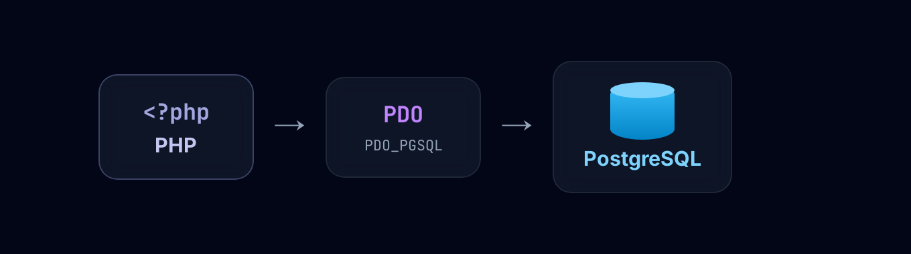
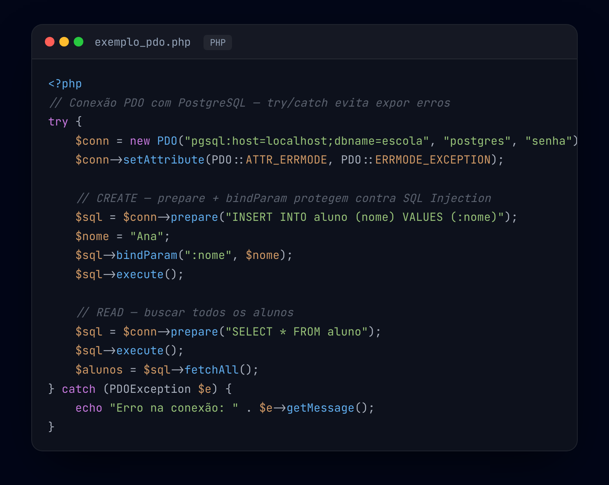

PHP é uma linguagem de programação voltada para o desenvolvimento web, executada no servidor. Uma de suas principais funções é a comunicação com bancos de dados — como o PostgreSQL — permitindo armazenar, buscar e manipular informações dinamicamente.
$conn.$varSQL.? ou :nome).Com a conexão ativa, aplicamos o CRUD — as quatro operações fundamentais de qualquer sistema (veja o diagrama abaixo). Elas ficam organizadas em funções, deixando o código limpo, reutilizável e fácil de manter.
Usar prepare + bindParam protege o sistema contra ataques de SQL Injection.

PDO_PGSQL para
PostgreSQL). A conexão fica em $conn e o fluxo é prepare →
bindParam → execute → fetch.
try/catch, Create
(INSERT) usando prepare + bindParam e Read (SELECT) com
fetchAll — protegido contra SQL Injection.